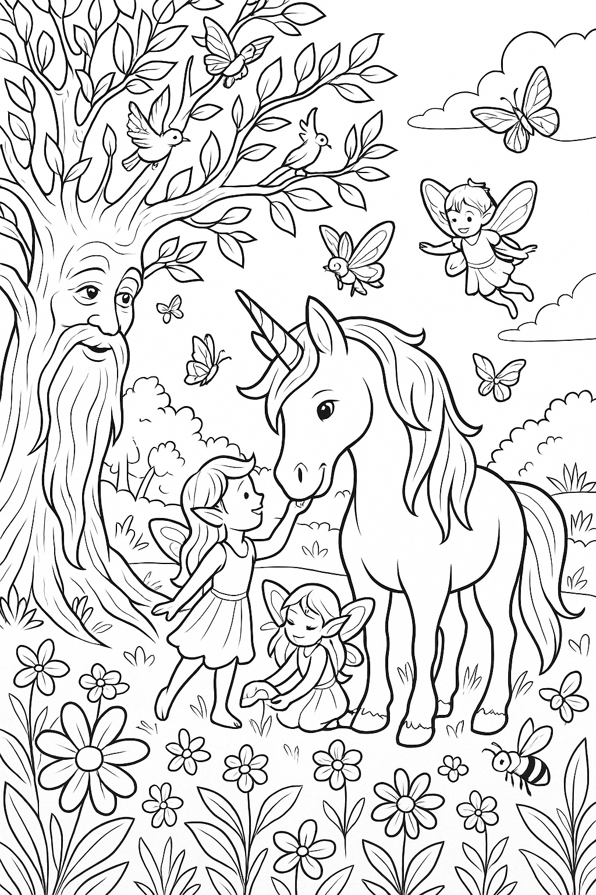
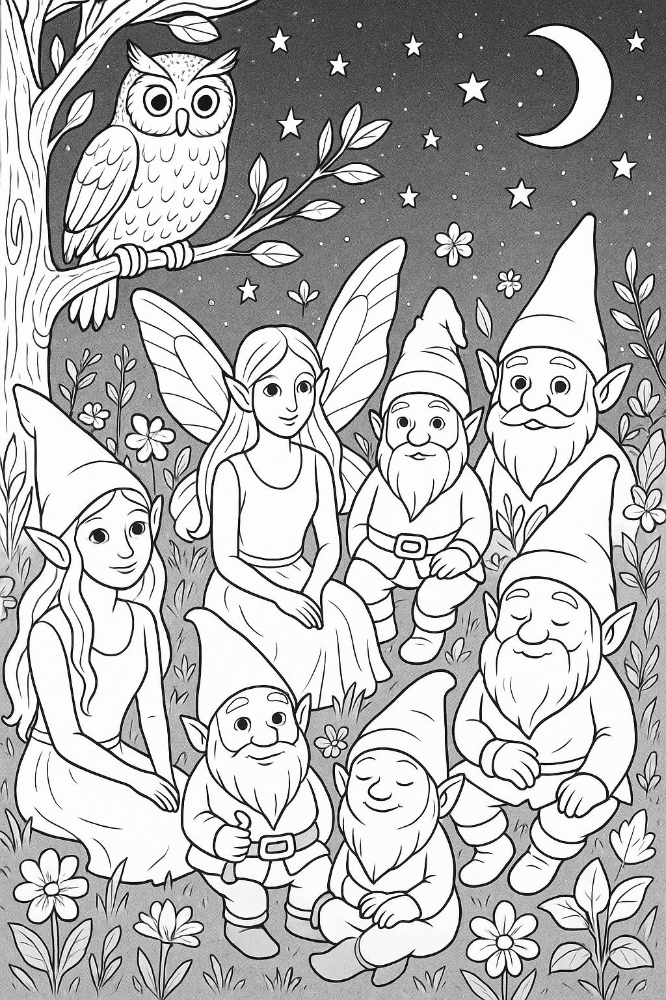
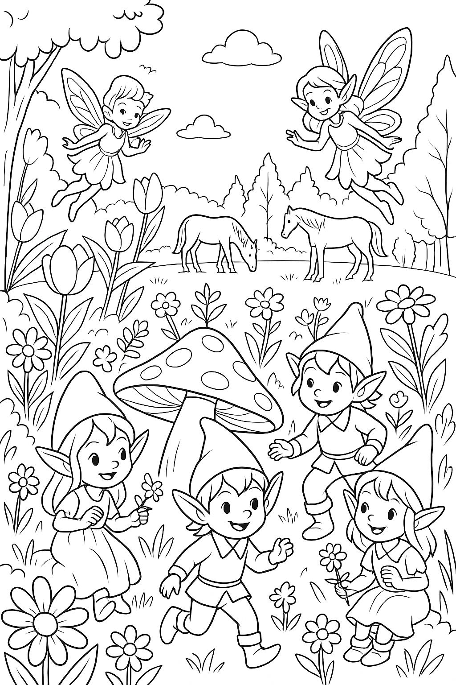
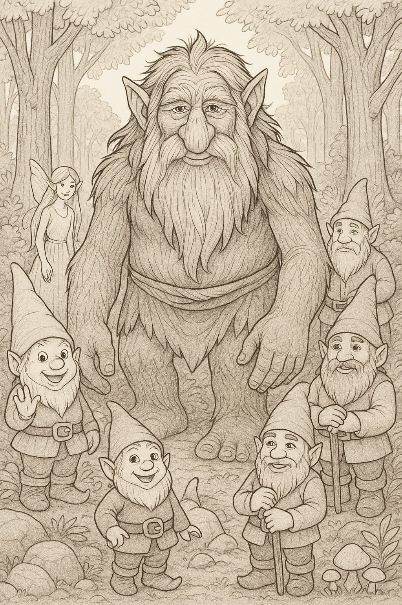
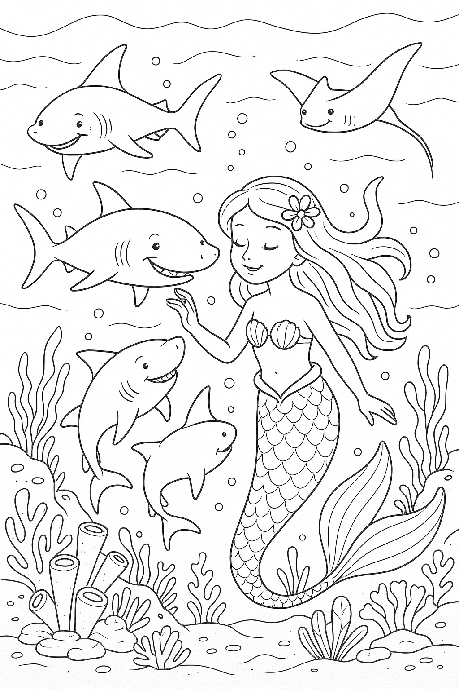
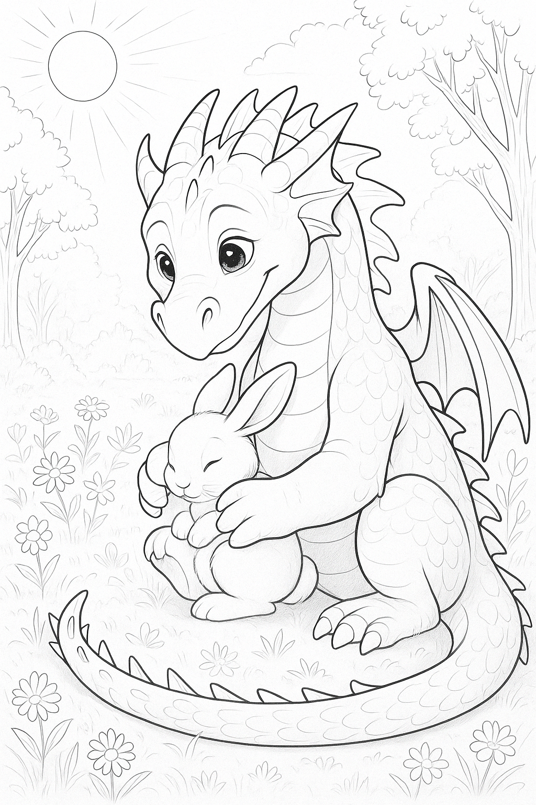

Woudwezens in Harmonie
Een boomgeest waakt over het bos, omgrind door elfjes, en een eenhoorn - samen hoeders van het bos in zachte verbondenheid
Nacht in het Bos
Kabouters een elfje en een fee verzamelen zich onder de maan, samen met een wijze uil. Elk wezen is uniek en toch horen ze bij elkaar.
Kabouterpret en Elfjesdans
Kleine kabouters en jonge elfjes spelen onder en boven een paddenstoel. Een magisch pleziervol moment in het bos.
Trol, Fee en kaboutervrienden
Een grote vriendelijke trol tussen kabouters met op de achtergrond een lieve Fee. En een die kabouter zwaait naar jou!
Troll in de Grot

Een vriendelijke trol zit in zijn grot vol paddenstoelen die hij o zó lekker vindt. Hij geniet van een grote kom vol paddenstoelen.
Zeemeermin speelt met Haaien
Een jonge zeemeermin speelt vrolijk met haaien in de zee. Ze weet allang dat haaien eigenlijk hele liefdevolle en slimme dieren zijn.
Drakenknuffel
In een zonnig bloemenveld knuffelt een jonge draak spontaan een konijntje! Soms zeggen zachte poten meer dan duizend woorden.